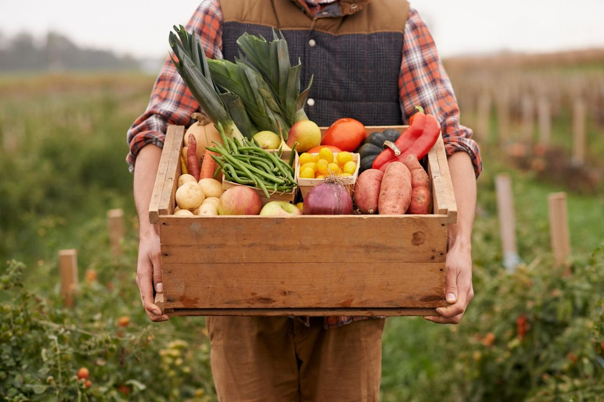
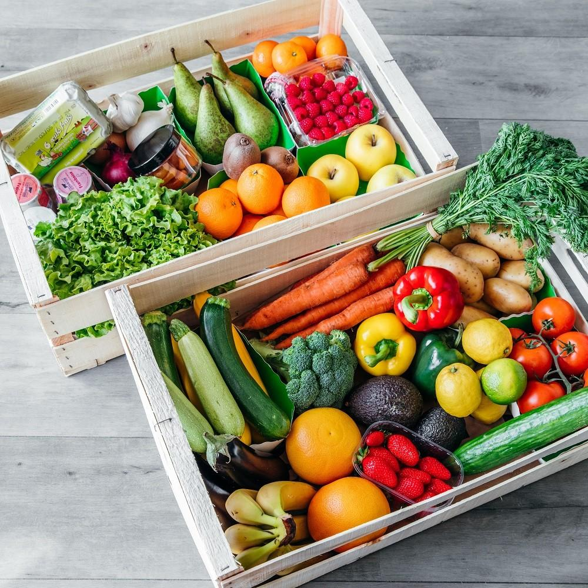
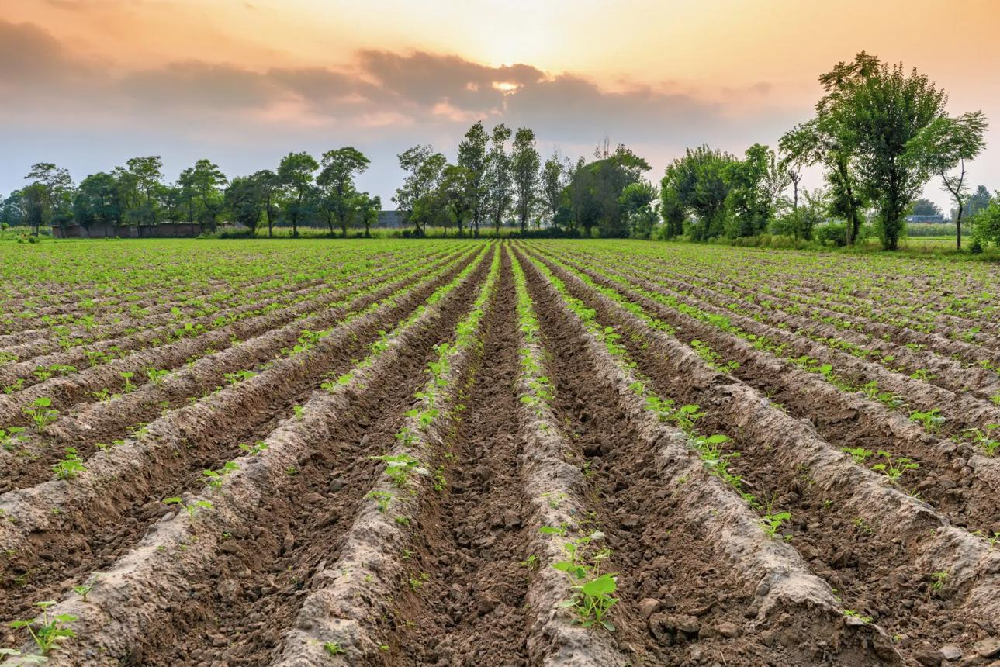
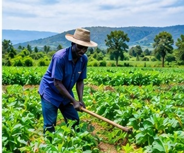
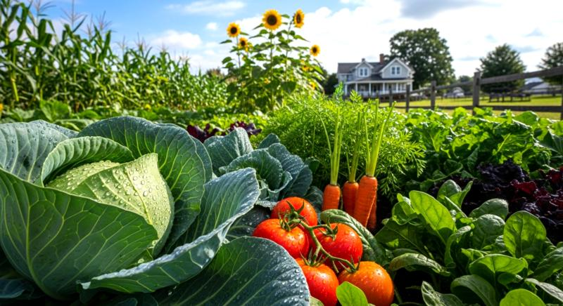

A LOOK AT AGRICULTURE
Farm gallery
Images illustrating crops, fields, produce and agricultural work.






Images are loaded from Unsplash and require an internet connection. Replace them with your own approved farm photographs for a fully personalised project.